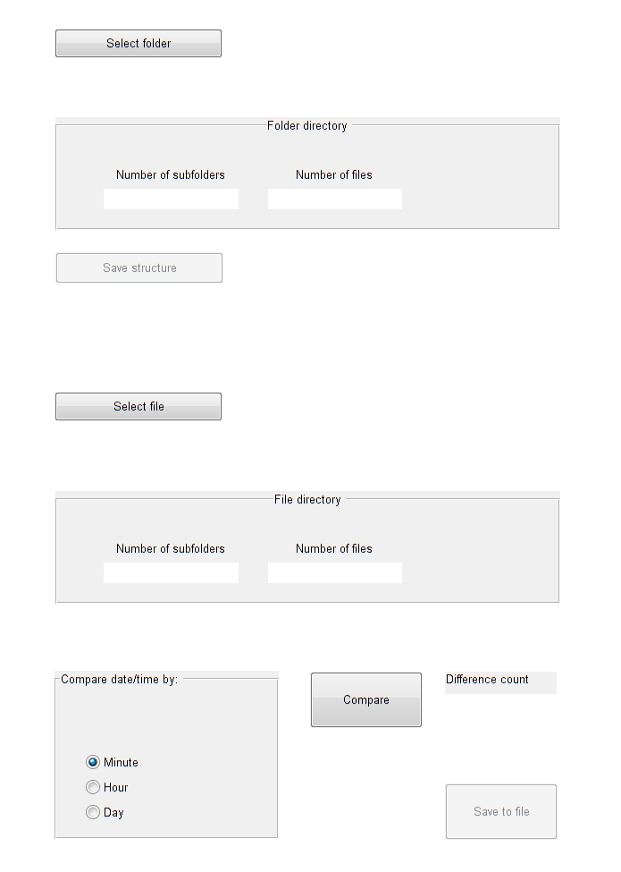

Contents
- Main
- --- Executes just before CompDir is made visible.
- --- Outputs from this function are returned to the command line.
- Selects local directory
- Save directory content on .csv file
- Opens source file
- Checks if same content on local directory and on file
- Saves the difference
- Updates the time parameter (day, hour, minute, second)
%%%%%%%%%%%%%%%%%%%%%%%%%%%%%%%%%%%%%%%%%%%%%%%%%%%%%%%%%%%%% % % All rights reserved % % Arbets- och miljömedicin, Lund, Sweden % % Contact: % Henrik Enquist % henrik.enquist@skane.se % +46 (0)46 176936 %%%%%%%%%%%%%%%%%%%%%%%%%%%%%%%%%%%%%%%%%%%%%%%%%%%%%%%%%%%%%
Main
function varargout = CompDir(varargin)
% COMPDIR MATLAB code for CompDir.fig % COMPDIR, by itself, creates a new COMPDIR or raises the existing % singleton*. % % H = COMPDIR returns the handle to a new COMPDIR or the handle to % the existing singleton*. % % COMPDIR('CALLBACK',hObject,eventData,handles,...) calls the local % function named CALLBACK in COMPDIR.M with the given input arguments. % % COMPDIR('Property','Value',...) creates a new COMPDIR or raises the % existing singleton*. Starting from the left, property value pairs are % applied to the GUI before CompDir_OpeningFcn gets called. An % unrecognized property name or invalid value makes property application % stop. All inputs are passed to CompDir_OpeningFcn via varargin. % % *See GUI Options on GUIDE's Tools menu. Choose "GUI allows only one % instance to run (singleton)". % % See also: GUIDE, GUIDATA, GUIHANDLES % Edit the above text to modify the response to help CompDir % Last Modified by GUIDE v2.5 04-Sep-2015 10:35:20 % Begin initialization code - DO NOT EDIT gui_Singleton = 1; gui_State = struct('gui_Name', mfilename, ... 'gui_Singleton', gui_Singleton, ... 'gui_OpeningFcn', @CompDir_OpeningFcn, ... 'gui_OutputFcn', @CompDir_OutputFcn, ... 'gui_LayoutFcn', [] , ... 'gui_Callback', []); if nargin && ischar(varargin{1}) gui_State.gui_Callback = str2func(varargin{1}); end if nargout [varargout{1:nargout}] = gui_mainfcn(gui_State, varargin{:}); else gui_mainfcn(gui_State, varargin{:}); end % End initialization code - DO NOT EDIT
--- Executes just before CompDir is made visible.
function CompDir_OpeningFcn(hObject, eventdata, handles, varargin)
% This function has no output args, see OutputFcn. % hObject handle to figure % eventdata reserved - to be defined in a future version of MATLAB % handles structure with handles and user data (see GUIDATA) % varargin command line arguments to CompDir (see VARARGIN) % Choose default command line output for CompDir handles.output = hObject; % Directory information on local disk handles.rootFolder = ''; handles.dirContent = []; % Directory information on file handles.sourceFile = ''; handles.fileContent = []; handles.fileContent.isdir = ''; % Information on differences handles.diffFileN = []; % Unique files/folders handles.diffDirN = []; handles.diffTotN = []; handles.diffFileC = []; % Common files/folders, mismatching date/size handles.diffDirC = []; handles.diffTotC = []; % Date/time comparison level radio button group handles.timeParam = 'Minute'; % Update handles structure guidata(hObject, handles); % UIWAIT makes CompDir wait for user response (see UIRESUME) % uiwait(handles.figure1);
--- Outputs from this function are returned to the command line.
function varargout = CompDir_OutputFcn(hObject, eventdata, handles)
% varargout cell array for returning output args (see VARARGOUT); % hObject handle to figure % eventdata reserved - to be defined in a future version of MATLAB % handles structure with handles and user data (see GUIDATA) % Get default command line output from handles structure varargout{1} = handles.output;
Selects local directory
--- Executes on button press in selectFolderPB.
function selectFolderPB_Callback(hObject, eventdata, handles)
% hObject handle to selectFolderPB (see GCBO) % eventdata reserved - to be defined in a future version of MATLAB % handles structure with handles and user data (see GUIDATA) % Select root folder handles.rootFolder = uigetdir; % Update file name text field set(findobj('Tag', 'folderName'),'String', handles.rootFolder); % Message box mb = msgbox('Opening directory. Please wait...'); % Retrieve the content of folder and subfolders as struct % Exclude absolute path text from results handles.dirContent = rdir([handles.rootFolder,'\**\*'], '', true); % Close message box close(mb); % Count and display total number of folders and files isDir = [handles.dirContent.isdir]; dirNames = {handles.dirContent(isDir).name}; fileNames = {handles.dirContent(~isDir).name}; dirCount = size(dirNames, 2); fileCount = size(fileNames, 2); set(findobj('Tag', 'dirCountDir'),'String', dirCount); set(findobj('Tag', 'fileCountDir'),'String', fileCount); % Convert struct to table handles.dirContent = struct2table(handles.dirContent); % Enable 'saveContentPB' set(handles.saveContentPB, 'enable','on') % Update handles structure guidata(hObject, handles);
Save directory content on .csv file
--- Executes on button press in saveContentPB.
function saveContentPB_Callback(hObject, eventdata, handles)
% hObject handle to saveContentPB (see GCBO) % eventdata reserved - to be defined in a future version of MATLAB % handles structure with handles and user data (see GUIDATA) [file, path] = uiputfile('directoryContent.csv', 'Save directory structure'); targetFile = strcat(path, file); set(findobj('Tag', 'targetFile'),'String', targetFile); % try % temp_table = struct2table(handles.dirContent); % catch ME % msgbox(getReport(ME, 'extended', 'hyperlinks', 'off')); % % closereq; % end try writetable(handles.dirContent, targetFile); msgbox('File with directory content has been saved'); catch ME msgbox(getReport(ME, 'extended', 'hyperlinks', 'off')); % closereq; end
Opens source file
--- Executes on button press in sourceFilePB.
function sourceFilePB_Callback(hObject, eventdata, handles)
% hObject handle to sourceFilePB (see GCBO) % eventdata reserved - to be defined in a future version of MATLAB % handles structure with handles and user data (see GUIDATA) % Get file from dialog box [file, path] = uigetfile('*.csv','Open saved directory structure'); handles.sourceFile = strcat(path, file); % Update text field in GUI set(findobj('Tag', 'sourceFile'),'String', handles.sourceFile); % Read data from file try handles.fileContent = readtable(handles.sourceFile); catch ME msgbox(getReport(ME, 'extended', 'hyperlinks', 'off')); % closereq; end % Count and display total number of folders and files dID = handles.fileContent.isdir == true; fID = handles.fileContent.isdir == false; dirCount = sum(dID); fileCount = sum(fID); set(findobj('Tag', 'dirCountFile'),'String', dirCount); set(findobj('Tag', 'fileCountFile'),'String', fileCount); % Update handles structure guidata(hObject, handles);
Checks if same content on local directory and on file
--- Executes on button press in comparePB.
function comparePB_Callback(hObject, eventdata, handles)
% hObject handle to comparePB (see GCBO) % eventdata reserved - to be defined in a future version of MATLAB % handles structure with handles and user data (see GUIDATA) % Message box mb = msgbox('Comparing directories. Please wait...'); % Update handles structure guidata(hObject, handles); % Table column order: 'name' 'date' 'bytes' 'isdir' 'datenum' 'source' % Add a 'source' column source_tmp = repmat({'file'}, size(handles.fileContent, 1), 1); handles.fileContent.source = source_tmp; source_tmp = repmat({'folder'}, size(handles.dirContent, 1), 1); handles.dirContent.source = source_tmp; % Temp for common files and folders tF = handles.fileContent; tD = handles.dirContent; % TODO: It seems that 'second' is returning mismatch for identical seconds % Round (floor) 'datenum' down to nearest second, minute, hour, or day % Change 'name' to lowercase for i = 1:size(tF, 1) tF{i,5} = datenum_floor(tF{i,5}, handles.timeParam); tF{i,1} = lower(tF{i,1}); end for i = 1:size(tD, 1) tD{i,5} = datenum_floor(tD{i,5}, handles.timeParam); tD{i,1} = lower(tD{i,1}); end % Compare by 'name' (lowercase), i.e. files/folders unique to either side [ a, iFU] = setdiff(tF(:,1), tD( :,1)); [ b, iDU] = setdiff(tD( :,1), tF( :,1)); % Get unique files and folders handles.diffFileN = handles.fileContent(iFU, :); handles.diffDirN = handles.dirContent(iDU, :); % Delete all unique files and folders from temp to get common ones tF(iFU, :) = []; tD(iDU, :) = []; % Compare by 'name' (lowercase) 'bytes' and 'datenum' [ c, iFC] = setdiff(tF(:,[1 3 5]), tD( :,[1 3 5])); [ d, iDC] = setdiff(tD( :,[1 3 5]), tF( :,[1 3 5])); % Get only common files with mismatching 'datenum' and/or 'bytes' tF = tF(iFC, :); tD = tD(iDC, :); % Exclude common folders, since only common files are of interest rows = tF.isdir == true | tF.isdir == '1'; tF(rows, :) = []; rows = tD.isdir == true | tD.isdir == '1'; tD(rows, :) = []; % Get common mismatching files handles.diffFileC = tF; handles.diffDirC = tD; % Merge unique files/folders handles.diffTotN = [handles.diffDirN; handles.diffFileN]; % Merge mismatching common files handles.diffTotC = [handles.diffDirC; handles.diffFileC]; % Sort by 'name' % NB. Case sensitive! handles.diffTotC = sortrows(handles.diffTotC,{'name'}, {'ascend'}); % Close message box close(mb); if isempty(handles.diffTotN) && isempty(handles.diffTotC) set(findobj('Tag', 'diffCount'),'String', '0'); msgbox('File and folder content are identical'); else % Count and display total number of differences in folders and files diffCount = size(handles.diffTotN, 1) + size(handles.diffTotC, 1); set(findobj('Tag', 'diffCount'),'String', diffCount); end % Enable 'saveDiffPB' set(handles.saveDiffPB, 'enable','on'); % Update handles structure guidata(hObject, handles);
Saves the difference
--- Executes on button press in saveDiffPB.
function saveDiffPB_Callback(hObject, eventdata, handles)
% hObject handle to saveDiffPB (see GCBO) % eventdata reserved - to be defined in a future version of MATLAB % handles structure with handles and user data (see GUIDATA) % Save to Excel file [file, path] = uiputfile('diffFile.xlsx', 'Save directory difference'); targetFile = strcat(path, file); % Check if file already is open. % doc = {['File:', handles.sourceFile, ' Folder:', handles.rootFolder]}; % [status msg] = xlswrite(targetFile, doc); % if status == 0 if xls_check_if_open(targetFile) msgbox('The file is already open. Close it and try again'); else try % Erase all sheets xls_delete_all_sheets(targetFile); % Message box mb = msgbox('Saving file. Please wait...'); % Unique files/folders on folder if ~isempty(handles.diffDirN) writetable(handles.diffDirN, targetFile, 'Sheet', 'Only on folder'); end % Unique files/folders on file if ~isempty(handles.diffFileN) writetable(handles.diffFileN, targetFile, 'Sheet', 'Only on file'); end % Common files with mismatching 'datenum' and/or 'bytes' if ~isempty(handles.diffTotC) writetable(handles.diffTotC, targetFile, 'Sheet', 'Mismatch'); end % Close message box close(mb); catch ME %msgbox(getReport(ME, 'extended', 'hyperlinks', 'off')); %closereq; end msgbox('File has been saved successfully'); end
Updates the time parameter (day, hour, minute, second)
--- Executes when selected object is changed in datetimeRBG.
function datetimeRBG_SelectionChangedFcn(hObject, eventdata, handles) % hObject handle to the selected object in datetimeRBG % eventdata reserved - to be defined in a future version of MATLAB % handles structure with handles and user data (see GUIDATA) handles.timeParam = get(eventdata.NewValue, 'String'); % Update handles structure guidata(hObject, handles);